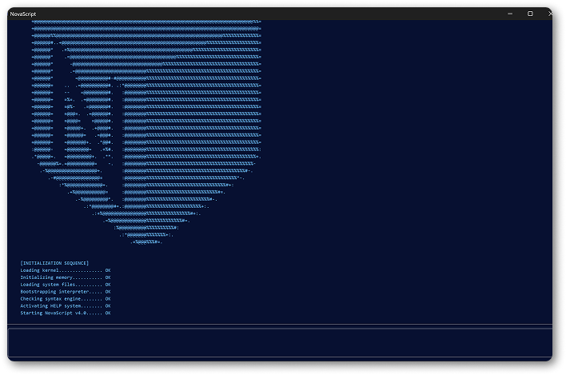
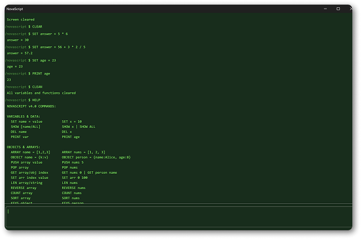
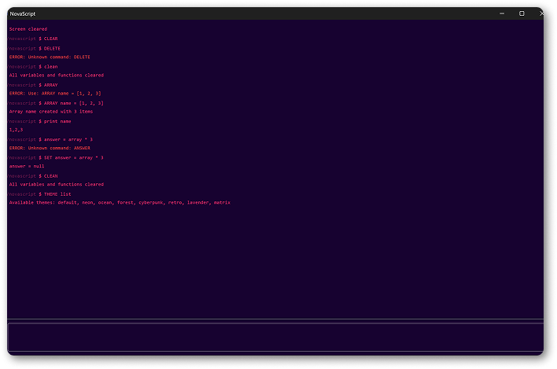

NovaScriptTM
... a free, simple programming language to learn basic code for Windows® applicationsVersion 4.0.3
Last updated: 13 November 2025
Copyright © 2024-2025 Arata Yamashita
Freeware - no nags, no ads and fully functional.
Download .exe file for Windows®
Web Version
Overview:
NovaScriptTM is a simple programming langauge for 32bit and 64bit Windows®, Linux and macOS (via browser). It's the easiest way to learn and understand code before moving onto Python, Java etc, and an education tool - making IT lessons easier, responsive and just better. And the best thing? Fully online or downloadble as an .exe for Windows®.
Features:
Novascript is a fully web-based programming language, designed for rapid experimentation, learning, and creative coding.Key Features:
- 100% web-based: Run Novascript directly in your browser, with instant feedback.
- Theme options: Toggle between different color themes for your own personalization.
- Simple syntax: Write code and see results in a single line—great for quick prototyping and exercises.
- Minimal setup—just open the browser and start coding!
- Designed for absolute simplicity, so anyone can start coding right away.

Supported systems:
Novascript is available for Windows as both a downloadable executable and a web-based app. On macOS and Linux, Novascript is supported through the web-based app only, which runs in any modern browser. There is currently no native desktop app for macOS or Linux. The web app allows anyone to start coding with Novascript instantly, regardless of their operating system, while Windows users can also take advantage of the full-featured desktop version for enhanced offline use.
Other Features:
Main Commands:
The list of all the important main commands are right below on the table. These can also be seen when typing "HELP" in the console panel. Main command line tools:| Commands | Parameter | |
|---|---|---|
| NOVA | required to run NovaScript prerequisites and other setup files. (Cannot access any other tools until run) | |
| HELP | lists all commands enterable in console (including main commands) | |
| CLEAR | clears all run commands on-screen at that point; variables will retain their save data | |
| CLEAN | clears all variables saved onto ~/novascript | |
| THEME list/name | theme list and set specified theme with console result |
Notes:
- All other commands with explanations can be downloaded here.
- Variables do not save on if app is closed or reloaded.
- Keep variable info in a text file or notebook to re-initate for next time
Command Examples
Set variable:
SET age = 23 or SET height = 148 etc...
Show variable answer:
PRINT age or PRINT height etc...
Change theme:
SET forest or SET ocean or SET default etc...
Show all themes:
THEME list // The list has 8 different color palette themes
Software Education Use:
Novascript is available completely free for personal, educational, and commercial use, with no need for an education license or institutional subscriptions. Users can access all features without restriction, making it easy for individuals, schools, and organizations to adopt the software without legal or financial barriers. The open access model means you can modify, share, and deploy Novascript as needed to suit your learning or development environment. Novascript’s main positives are its simplicity, cross-platform support—including instant access through any modern web browser—and its lightweight, intuitive interface that lets you start coding immediately. It encourages experimentation, quick prototyping, and flexible usage for any programming context. The caveats include the absence of dedicated support or warranty, as the platform relies on community-driven development and contributions. While it supports browser-based coding on all major platforms, only Windows users have a native desktop application. Some advanced features may require self-guided learning or exploration, but documentation and examples are provided to help new users get started.Licence to Use - Terms and Conditions:
MIT License Copyright (c) 2025 artymst Permission is hereby granted, free of charge, to any person obtaining a copy of this software and associated documentation files (the "Software"), to deal in the Software without restriction, including without limitation the rights to use, copy, modify, merge, publish, distribute, sublicense, and/or sell copies of the Software, and to permit persons to whom the Software is furnished to do so, subject to the following conditions: The above copyright notice and this permission notice shall be included in all copies or substantial portions of the Software. THE SOFTWARE IS PROVIDED "AS IS", WITHOUT WARRANTY OF ANY KIND, EXPRESS OR IMPLIED, INCLUDING BUT NOT LIMITED TO THE WARRANTIES OF MERCHANTABILITY, FITNESS FOR A PARTICULAR PURPOSE AND NONINFRINGEMENT. IN NO EVENT SHALL THE AUTHORS OR COPYRIGHT HOLDERS BE LIABLE FOR ANY CLAIM, DAMAGES OR OTHER LIABILITY, WHETHER IN AN ACTION OF CONTRACT, TORT OR OTHERWISE, ARISING FROM, OUT OF OR IN CONNECTION WITH THE SOFTWARE OR THE USE OR OTHER DEALINGS IN THE SOFTWARE.Download version 4.0.3 (Only for Windows®):
Download EXE setup installer (71.6MB)Download ZIP setup installer (70MB)
Changes in 4.0.3:
- improved performance in general
- added further commands for arrays
- bug fixes for themes fixed
- fixed several other minor bugs